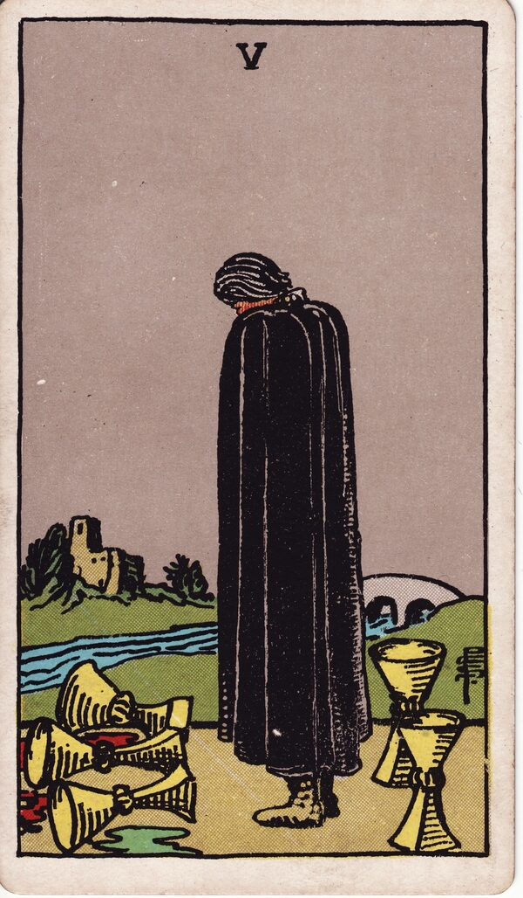

Minor Arcana · Suit of Cups
Five of Cups Tarot Card Meaning
The Five of Cups is grief with your back turned to what remains — loss, regret, and the path home. Want to know what it means in your spread? Every reader on our line is hand-vetted — connect in under 60 seconds, $1 for your first minute, hang up anytime.
- Hand-vetted readers
- Available 24/7
- Hang up anytime

Five of Cups — What It Shows
A cloaked figure stands with head bowed before three spilled cups. Behind him, unnoticed, two cups still stand upright, and a bridge leads back to a home across the river. The image holds the card's whole lesson: the loss is real, but it isn't total — and the way back exists the moment he turns around. After the discontent of the Four, the Five is honest grief.
Five of Cups Upright Meaning
Upright, the Five of Cups is grief, loss, regret, and disappointment. Something has genuinely been lost and the feeling deserves to be felt. The card doesn't deny the pain — it gently points out that focus is entirely on the three spilled cups while two full ones, and a way home, remain unseen behind you.
Five of Cups Reversed Meaning
Reversed, the figure turns around. Acceptance, healing, forgiveness (of yourself or someone else), and moving forward. The grief has done its work and you can finally see what remains and walk the bridge back.
Five of Cups in Love & Relationships
In love, the Five of Cups is heartbreak, regret, or grieving a relationship or its disappointments. Example: a caller stuck mourning a breakup drew this card; the read honoured the loss while naming the "two cups" — connection and possibility still present — that grief had her facing away from.
Five of Cups in Career & Money
For work it's a setback, a failed plan, a loss, or regret over a decision. Example: someone fixated on a job that fell through pulled this card; the message acknowledged the disappointment but redirected toward the opportunities still standing that the regret was eclipsing.
Five of Cups as Advice
As advice: grieve honestly, then turn around. Let the loss be real, but consciously look at what remains and take the first step back across the bridge.
Five of Cups Reversed in Love & Career
Reversed, this card is usually the more hopeful of the two. In love, it's healing after heartbreak — forgiveness, acceptance, releasing regret about an ex, and re-opening to what (or who) is still there. In career, reversed it's recovering from a professional loss, learning the lesson, and moving forward instead of replaying the mistake. The reversed Five's whole movement is the turn from the spilled cups to the standing ones. A live reader can tell you whether you're mid-grief or genuinely ready to cross the bridge.
What People Ask About the Five of Cups
The questions readers hear most about this card:
"Does it mean a relationship is over?"
It marks loss or grief, but the two standing cups say not everything is gone.
"Five of Cups as feelings?"
Regret, sadness, "I'm grieving this" — sometimes guilt.
"Will my ex regret it?"
It can show regret energy; surrounding cards say whose and what comes of it.
"Is there hope here?"
Yes — literally two cups and a bridge; the card insists on it.
Five of Cups — Yes or No?
Leans no, weighted by loss. Reversed shifts toward yes as acceptance and recovery take hold.
Five of Cups Timing in a Reading
Timing is the least precise thing tarot does, so treat this as a lean, not a date. The Five of Cups describes a grieving phase rather than an event — readers usually frame it as present and lasting until acceptance comes, not a fixed number of weeks. Reversed signals that turning point is near. A live reader reads timing from the full spread and your question far more reliably than the card alone.
Five of Cups Card Combinations
Context changes everything — a few pairings readers see often:
Five of Cups + Six of Cups
Grief tied to the past — nostalgia and what was lost.
Five of Cups + The Star
Healing and hope rising after a painful loss.
Five of Cups + Two of Cups
A standing cup you're not seeing — a connection still available.
Five of Cups in a Tarot Reading
A meanings page is the map; a live reading is the territory. The Five of Cups shifts with its position and the cards around it — which is what a hand-vetted reader interprets for your question. See the full Suit of Cups, all 56 cards on the Minor Arcana hub, or start a phone tarot reading.
← Four of Cups · Next: Six of Cups →
What Does the Five of Cups Mean for You?
A meanings list is the map; a live reading is the territory. We'll connect you with the right hand-vetted tarot reader in under 60 seconds. $1/min first call · 15 minutes for $10 · hang up anytime · 100% satisfaction promise.
Call (888) 920-6662 NowFive of Cups — Frequently Asked Questions
What does the Five of Cups mean?
Grief, loss, and regret — focused on what spilled while two cups still stand.
What does it mean reversed?
Acceptance, healing, forgiveness, and moving on.
What does the Five of Cups mean in love?
Heartbreak or grieving a relationship — with a reminder that something still remains.
Is it a yes or no card?
Leans no, weighted by loss; reversed shifts toward yes.
How much does a reading cost?
First-time callers pay $1/min, or 15 minutes for $10, and you can hang up anytime.
Get Your Tarot Reading Now
Connected to a hand-vetted reader in under 60 seconds, the cards pulled on your real question, and you hang up with clarity.
Call (888) 920-6662